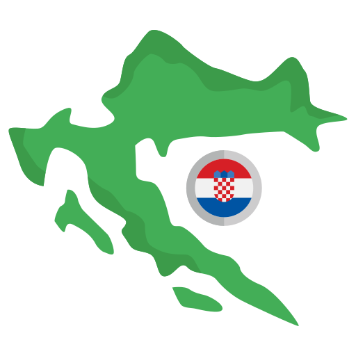

<!DOCTYPE html>
<html lang="en">

<head>
    <meta charset="UTF-8">
    <meta name="viewport" content="width=device-width, initial-scale=1.0">
    <title>Island Info</title>

    <!-- leaflet css  -->
    <link rel="stylesheet" href="https://unpkg.com/leaflet@1.7.1/dist/leaflet.css" />
    
    <style>
        body {
            margin: 0;
            padding: 0;
        }

        #map {
            width: 100%;
            height: 100vh;
        }

        .coordinate {
            position: absolute;
            bottom: 10px;
            right: 50%;
        }

        .leaflet-popup-content-wrapper {
            background-color: #000000;
            color: #fff;
            border: 1px solid red;
            border-radius: 0px;
        }
    </style>
</head>

<body>
    <div id="map">
        <div class="leaflet-control coordinate"></div>
    </div>
</body>

</html>

<!-- leaflet js  -->
<script src="https://unpkg.com/leaflet@1.7.1/dist/leaflet.js"></script>
<script src="./data/point.js"></script>
<script src="./data/line.js"></script>
<script src="./data/polygon.js"></script>
<link rel="stylesheet" href="https://unpkg.com/leaflet-search@2.9.8/dist/leaflet-search.min.css" />
<script src="https://unpkg.com/leaflet-search@2.9.8/dist/leaflet-search.min.js"></script>
<script src="brzobrodske_luke.js"></script>

<script>
    // Map initialization 
    var map = L.map('map').setView([43.9, 16.666], 8);
    //osm layer
    var osm = L.tileLayer('https://tile.openstreetmap.org/{z}/{x}/{y}.png', {
	maxZoom: 19,
	attribution: '&copy; <a href="https://www.openstreetmap.org/copyright">OpenStreetMap</a> contributors'
    });


    var CartoDB_PositronNoLabels = L.tileLayer('https://{s}.basemaps.cartocdn.com/light_nolabels/{z}/{x}/{y}{r}.png', {
	attribution: '&copy; <a href="https://www.openstreetmap.org/copyright">OpenStreetMap</a> contributors &copy; <a href="https://carto.com/attributions">CARTO</a>',
	subdomains: 'abcd',
	maxZoom: 20
    }).addTo(map);


    var Esri_WorldImagery = L.tileLayer('https://server.arcgisonline.com/ArcGIS/rest/services/World_Imagery/MapServer/tile/{z}/{y}/{x}', {
	attribution: 'Tiles &copy; Esri &mdash; Source: Esri, i-cubed, USDA, USGS, AEX, GeoEye, Getmapping, Aerogrid, IGN, IGP, UPR-EGP, and the GIS User Community'
    });

    var baseMaps = {
    "Basic": CartoDB_PositronNoLabels,
    "OpenStreetMap": osm,
    "Satellite": Esri_WorldImagery
    };

    

   

        // Podaci o otocima
        var otoci = [
    { name: "BABAC", coords: [43.955721, 15.403536], population: "4", area: "0.79 km²", link: "https://hr.wikipedia.org/wiki/Babac_(otok)" },
    { name: "BIŠEVO", coords: [42.973361, 16.012064], population: "23", area: "5.92 km²", link: "https://hr.wikipedia.org/wiki/Biševo" },
    { name: "BRAČ", coords: [43.317272, 16.659039], population: "13825", area: "395.44 km²", link: "https://hr.wikipedia.org/wiki/Bra%C4%8D" },
    { name: "ČIOVO", coords: [43.497238, 16.297211], population: "5257", area: "28.13 km²", link: "https://hr.wikipedia.org/wiki/Čiovo" },
    { name: "CRES", coords: [44.838209, 14.40667], population: "2849", area: "405.71 km²", link: "https://hr.wikipedia.org/wiki/Cres" },
    { name: "DRVENIK MALI", coords: [43.448046, 16.082396], population: "119", area: "3.43 km²", link: "https://hr.wikipedia.org/wiki/Drvenik_Mali" },
    { name: "DRVENIK VELI", coords: [43.442862, 16.146673], population: "170", area: "11.70 km²", link: "https://hr.wikipedia.org/wiki/Drvenik_Veli" },
    { name: "DUGI OTOK", coords: [43.990627, 15.061297], population: "1691", area: "113.31 km²", link: "https://hr.wikipedia.org/wiki/Dugi_otok" },
    { name: "HVAR", coords: [43.143398, 16.737267], population: "10678", area: "297.38 km²", link: "https://hr.wikipedia.org/wiki/Hvar" },
    { name: "ILOVIK", coords: [44.45198, 14.551193], population: "106", area: "5.51 km²", link: "https://hr.wikipedia.org/wiki/Ilovik" },
    { name: "IST", coords: [44.274526, 14.765015], population: "146", area: "9.73 km²", link: "https://hr.wikipedia.org/wiki/Ist" },
    { name: "IŽ", coords: [44.03634, 15.118831], population: "516", area: "16.51 km²", link: "https://hr.wikipedia.org/wiki/Iž" },
    { name: "KAPRIJE", coords: [43.696258, 15.701055], population: "186", area: "7.12 km²", link: "https://hr.wikipedia.org/wiki/Kaprije" },
    { name: "KOLOČEP", coords: [42.673656, 18.010423], population: "231", area: "2.44 km²", link: "https://hr.wikipedia.org/wiki/Koločep" },
    { name: "KORČULA", coords: [42.937588, 16.928841], population: "14594", area: "271.47 km²", link: "https://hr.wikipedia.org/wiki/Korčula" },
    { name: "KORNAT", coords: [43.803743, 15.32678], population: "14", area: "32.46 km²", link: "https://hr.wikipedia.org/wiki/Kornat" },
    { name: "KRAPANJ", coords: [43.673351, 15.91373], population: "166", area: "0.36 km²", link: "https://hr.wikipedia.org/wiki/Krapanj" },
    { name: "KRK", coords: [45.084671, 14.595239], population: "19916", area: "405.22 km²", link: "https://hr.wikipedia.org/wiki/Krk" },
    { name: "LASTOVO", coords: [42.754999, 16.882379], population: "747", area: "40.82 km²", link: "https://hr.wikipedia.org/wiki/Lastovo" },
    { name: "LOPUD", coords: [42.685244, 17.949691], population: "278", area: "4.38 km²", link: "https://hr.wikipedia.org/wiki/Lopud" },
    { name: "LOŠINJ", coords: [44.573771, 14.414924], population: "7087", area: "74.37 km²", link: "https://hr.wikipedia.org/wiki/Lošinj" },
    { name: "MALE SRAKANE", coords: [44.563667, 14.332463], population: "2", area: "0.61 km²", link: "https://hr.wikipedia.org/wiki/Male_Srakane" },
    { name: "MLJET", coords: [42.744563, 17.545559], population: "1062", area: "98.02 km²", link: "https://hr.wikipedia.org/wiki/Mljet" },
    { name: "MOLAT", coords: [44.231487, 14.83638], population: "190", area: "22.18 km²", link: "https://hr.wikipedia.org/wiki/Molat" },
    { name: "MURTER", coords: [43.798248, 15.616436], population: "4628", area: "17.58 km²", link: "https://hr.wikipedia.org/wiki/Murter" },
    { name: "OLIB", coords: [44.377461, 14.787075], population: "117", area: "26.14 km²", link: "https://hr.wikipedia.org/wiki/Olib" },
    { name: "OŠLJAK", coords: [44.075556, 15.210481], population: "35", area: "0.33 km²", link: "https://hr.wikipedia.org/wiki/Ošljak" },
    { name: "PAG", coords: [44.440218, 15.027694], population: "8339", area: "284.18 km²", link: "https://hr.wikipedia.org/wiki/Pag" },
    { name: "PAŠMAN", coords: [43.953419, 15.352495], population: "2884", area: "60.11 km²", link: "https://hr.wikipedia.org/wiki/Pašman" },
    { name: "PREMUDA", coords: [44.327244, 14.626797], population: "65", area: "8.67 km²", link: "https://hr.wikipedia.org/wiki/Premuda" },
    { name: "PREŽBA", coords: [42.768354, 16.812811], population: "-", area: "2.81 km²", link: "https://hr.wikipedia.org/wiki/Prežba" },
    { name: "PRVIĆ (VODICE)", coords: [43.73018, 15.794943], population: "400", area: "2.41 km²", link: "https://hr.wikipedia.org/wiki/Prvi%C4%87" },
    { name: "RAB", coords: [44.772302, 14.770388], population: "8268", area: "86.12 km²", link: "https://hr.wikipedia.org/wiki/Rab" },
    { name: "RAVA", coords: [44.021779, 15.069275], population: "67", area: "3.63 km²", link: "https://hr.wikipedia.org/wiki/Rava" },
    { name: "RIVANJ", coords: [44.153699, 15.038588], population: "23", area: "3.62 km²", link: "https://hr.wikipedia.org/wiki/Rivanj" },
    { name: "SESTRUNJ", coords: [44.155348, 14.992291], population: "45", area: "15.12 km²", link: "https://hr.wikipedia.org/wiki/Sestrunj" },
    { name: "SILBA", coords: [44.37875, 14.695429], population: "344", area: "14.27 km²", link: "https://hr.wikipedia.org/wiki/Silba" },
    { name: "ŠIPAN", coords: [42.728448, 17.877431], population: "476", area: "16.22 km²", link: "https://hr.wikipedia.org/wiki/Šipan" },
    { name: "ŠOLTA", coords: [43.373036, 16.309965], population: "1975", area: "58.18 km²", link: "https://hr.wikipedia.org/wiki/Šolta" },
    { name: "SUSAK", coords: [44.508645, 14.301541], population: "139", area: "3.77 km²", link: "https://hr.wikipedia.org/wiki/Susak" },
    { name: "UGLJAN", coords: [44.076554, 15.170333], population: "5666", area: "51.05 km²", link: "https://hr.wikipedia.org/wiki/Ugljan" },
    { name: "UNIJE", coords: [44.648055, 14.250893], population: "66", area: "16.88 km²", link: "https://hr.wikipedia.org/wiki/Unije" },
    { name: "VELE SRAKANE", coords: [44.580982, 14.311659], population: "4", area: "1.18 km²", link: "https://hr.wikipedia.org/wiki/Vele_Srakane" },
    { name: "VIR", coords: [44.301237, 15.06877], population: "3045", area: "22.08 km²", link: "https://hr.wikipedia.org/wiki/Vir" },
    { name: "VIS", coords: [43.045014, 16.160011], population: "3287", area: "89.72 km²", link: "https://hr.wikipedia.org/wiki/Vis" },
    { name: "VRGADA", coords: [43.852217, 15.502452], population: "209", area: "2.32 km²", link: "https://hr.wikipedia.org/wiki/Vrgada" },
    { name: "VRNIK", coords: [42.935676, 17.169644], population: "-", area: "0.28 km²", link: "https://hr.wikipedia.org/wiki/Vrnik" },
    { name: "ŽIRJE", coords: [43.649208, 15.666969], population: "147", area: "15.08 km²", link: "https://hr.wikipedia.org/wiki/Žirje" },
    { name: "ZLARIN", coords: [43.688208, 15.851254], population: "293", area: "8.05 km²", link: "https://hr.wikipedia.org/wiki/Zlarin" },
    { name: "ZVERINAC", coords: [44.161566, 14.919616], population: "55", area: "4.18 km²", link: "https://hr.wikipedia.org/wiki/Zverinac" }
    ];


        // Podaci o lukama (ako je potrebno)
        var trajektneLuke = [
    { naziv: "Porozina", kontakt: "+385 (0)51666111", coords: [45.131307, 14.284854], wikipedia: "https://www.jadrolinija.hr/en" },
    { naziv: "Merag", kontakt: "+385 (0)51863170", coords: [44.979877, 14.448238], wikipedia: "https://www.jadrolinija.hr/en" },
    { naziv: "Valbiska", kontakt: "+385 (0)51863170", coords: [45.027971, 14.496688], wikipedia: "https://www.jadrolinija.hr/en" },
    { naziv: "Lopar", kontakt: "+385 (0)51666111", coords: [44.837619, 14.721237], wikipedia: "https://www.jadrolinija.hr/en" },
    { naziv: "Mišnjak", kontakt: "+385 (0)51724122", coords: [44.70611, 14.860848], wikipedia: "https://www.putovnica.net/en/transport/passenger-vehicle-car-ferry-stinica-misnjak-rab-rapska-plovidba" },
    { naziv: "Žigljen", kontakt: "+385 (0)98299133", coords: [44.580105, 14.948038], wikipedia: "https://www.jadrolinija.hr/en" },
    { naziv: "Novalja", kontakt: "+385 (0)53663651", coords: [44.555848, 14.880128], wikipedia: "https://www.jadrolinija.hr/en" },
    { naziv: "Preko", kontakt: "+385 (0)23286008", coords: [44.076311, 15.194552], wikipedia: "https://www.jadrolinija.hr/en" },
    { naziv: "Sućuraj", kontakt: "+385 (0)21773433", coords: [43.124745, 17.188484], wikipedia: "https://www.jadrolinija.hr/en" },
    { naziv: "Stari Grad", kontakt: "+385 (0)21765048", coords: [43.181353, 16.576221], wikipedia: "https://www.jadrolinija.hr/en" },
    { naziv: "Hvar", kontakt: "+385 (0)21741132", coords: [43.170048, 16.441312], wikipedia: "https://www.jadrolinija.hr/en" },
    { naziv: "Jelsa", kontakt: "+385 (0)21761055", coords: [43.162991, 16.696141], wikipedia: "https://www.jadrolinija.hr/en" },
    { naziv: "Supetar", kontakt: "+385 (0)21631357", coords: [43.385857, 16.554974], wikipedia: "https://www.jadrolinija.hr/en" },
    { naziv: "Brbinj", kontakt: "+385 (0)23378713", coords: [44.084649, 14.996248], wikipedia: "https://www.jadrolinija.hr/en" },
    { naziv: "Ubli", kontakt: "+385 (0)20805175", coords: [42.746071, 16.824808], wikipedia: "https://www.jadrolinija.hr/en" },
    { naziv: "Sobra", kontakt: "+385 (0)20746134", coords: [42.738949, 17.621308], wikipedia: "https://www.jadrolinija.hr/en" },
    { naziv: "Vis", kontakt: "+385 (0)21711032", coords: [43.061613, 16.185212], wikipedia: "https://www.jadrolinija.hr/en" },
    { naziv: "Bršanj", kontakt: "+385 (0)23278220", coords: [44.024205, 15.146264], wikipedia: "https://www.jadrolinija.hr/en" },
    { naziv: "Brgulje", kontakt: "+385 (0)23250563", coords: [44.225581, 14.838643], wikipedia: "https://www.jadrolinija.hr/en" },
    { naziv: "Drvenik Veli", kontakt: "+385 (0)21881508", coords: [43.449981, 16.144727], wikipedia: "https://www.jadrolinija.hr/en" },
    { naziv: "Drvenik Mali", kontakt: "+385 (0)21338333", coords: [43.449844, 16.09005], wikipedia: "https://www.jadrolinija.hr/en" },
    { naziv: "Ist", kontakt: "+385 (0)23666100", coords: [44.270909, 14.767064], wikipedia: "https://www.jadrolinija.hr/en" },
    { naziv: "Kaprije", kontakt: "+385 (0)995960717", coords: [43.687648, 15.708639], wikipedia: "https://www.jadrolinija.hr/en" },
    { naziv: "Vela Luka", kontakt: "+385 (0)60321321", coords: [42.959779, 16.709898], wikipedia: "https://www.jadrolinija.hr/en" },
    { naziv: "Dominče", kontakt: "+385 (0)20715410", coords: [42.952843, 17.15008], wikipedia: "https://www.jadrolinija.hr/en" },
    { naziv: "Kosirača", kontakt: "+385 (0)23666100", coords: [44.279396, 14.756652], wikipedia: "https://www.jadrolinija.hr/en" },
    { naziv: "Lopud", kontakt: "+385 (0)20324815", coords: [42.690352, 17.941289], wikipedia: "https://www.jadrolinija.hr/en" },
    { naziv: "Mala Rava", kontakt: "+385 (0)23250563", coords: [44.040265, 15.056928], wikipedia: "https://www.jadrolinija.hr/en" },
    { naziv: "Rava", kontakt: "+385 (0)23250563", coords: [44.022887, 15.059362], wikipedia: "https://www.jadrolinija.hr/en" },
    { naziv: "Mali Lošinj", kontakt: "+385 (0)51231765", coords: [44.53803, 14.463847], wikipedia: "https://www.jadrolinija.hr/en" },
    { naziv: "Luka Silba Žalić", kontakt: "+385 (0)23250563", coords: [44.373231, 14.690751], wikipedia: "https://www.jadrolinija.hr/en" },
    { naziv: "Molat", kontakt: "+385 (0)23250563", coords: [44.212417, 14.871833], wikipedia: "https://www.jadrolinija.hr/en" },
    { naziv: "Olib", kontakt: "+385 (0)23250563", coords: [44.380778, 14.774889], wikipedia: "https://www.jadrolinija.hr/en" },
    { naziv: "Ošljak", kontakt: "+385 (0)23250563", coords: [44.076066, 15.206713], wikipedia: "https://www.jadrolinija.hr/en" },
    { naziv: "Premuda", kontakt: "+385 (0)23250563", coords: [44.346456, 14.601549], wikipedia: "https://www.jadrolinija.hr/en" },
    { naziv: "Rivanj", kontakt: "+385 (0)23250563", coords: [44.152453, 15.031222], wikipedia: "https://www.jadrolinija.hr/en" },
    { naziv: "Rogač", kontakt: "+385 (0)21654545", coords: [43.396131, 16.299901], wikipedia: "https://www.jadrolinija.hr/en" },
    { naziv: "Sestrunj", kontakt: "+385 (0)23250563", coords: [44.13841, 15.01026], wikipedia: "https://www.jadrolinija.hr/en" },
    { naziv: "Silba", kontakt: "+385 (0)23250563", coords: [44.373228, 14.690723], wikipedia: "https://www.jadrolinija.hr/en" },
    { naziv: "Suđurađ", kontakt: "+385 (0)60321321", coords: [42.709787, 17.911312], wikipedia: "https://www.jadrolinija.hr/en" },
    { naziv: "Sumartin", kontakt: "+385 (0)21718553", coords: [43.285082, 16.870687], wikipedia: "https://www.jadrolinija.hr/en" },
    { naziv: "Tkon", kontakt: "+385 (0)23250565", coords: [43.921604, 15.420558], wikipedia: "https://www.jadrolinija.hr/en" },
    { naziv: "Zlarin", kontakt: "+385 (0)22219852", coords: [43.699691, 15.833451], wikipedia: "https://www.jadrolinija.hr/en" },
    { naziv: "Zverinac", kontakt: "+385 (0)23250563", coords: [44.161313, 14.914439], wikipedia: "https://www.jadrolinija.hr/en" },
    { naziv: "Žirje", kontakt: "+385 (0)22219852", coords: [43.662452, 15.656452], wikipedia: "https://www.jadrolinija.hr/en" }
    ];

 


        // Podaci o zračnim lukama
        var zracneLuke = [
            {
                naziv: "Zračna luka Rijeka-Krk",
                kontakt: "+385 (0)51842040",
                coords: [45.216889, 14.570267],
                info: "https://rijeka-airport.hr/"
            },
            {
                naziv: "Zračna luka Mali Lošinj",
                kontakt: "+385 (0)51231666",
                coords: [44.566944, 14.393889],
                info: "https://www.airportmalilosinj.hr/"
            },
            {
                naziv: "Zračna luka Brač",
                kontakt: "+385 (0)21 559 701",
                coords: [43.285719, 16.679719],
                info: "https://www.airport-brac.hr/"
            },
            {
                naziv: "Aerodrom Hvar",
                kontakt: "+385 (0)912508007",
                coords: [43.181273, 16.632976],
                info: "https://hr.wikipedia.org/wiki/Aerodrom_Hvar"
            }
        ];


        // Kopnene luke
        var kopneneLuke = [
    { naziv: "Pula", coords: [44.874760, 13.847060], info: "https://www.jadrolinija.hr/en" },
    { naziv: "Brestova", coords: [45.144444, 14.223733], info: "https://www.jadrolinija.hr/en" },
    { naziv: "Rijeka", coords: [45.323750, 14.439450], info: "https://www.jadrolinija.hr/en" },
    { naziv: "Stinica", coords: [44.720001, 14.891458], info: "https://www.jadrolinija.hr/en" },
    { naziv: "Prizna", coords: [44.601897, 14.970192], info: "https://www.jadrolinija.hr/en" },
    { naziv: "Zadar (Poluotok)", coords: [44.117602, 15.225860], info: "https://www.jadrolinija.hr/en" },
    { naziv: "Zadar (Gaženica)", coords: [44.093899, 15.256008], info: "https://www.jadrolinija.hr/en" },
    { naziv: "Biograd na Moru", coords: [43.939359, 15.439739], info: "https://www.jadrolinija.hr/en" },
    { naziv: "Pakoštane", coords: [43.905851, 15.507921], info: "https://www.jadrolinija.hr/en" },
    { naziv: "Vodice", coords: [43.755106, 15.774924], info: "https://www.jadrolinija.hr/en" },
    { naziv: "Šibenik", coords: [43.730722, 15.894079], info: "https://www.jadrolinija.hr/en" },
    { naziv: "Brodarica", coords: [43.675908, 15.920241], info: "https://www.jadrolinija.hr/en" },
    { naziv: "Trogir (Soline)", coords: [43.515335, 16.242809], info: "https://www.jadrolinija.hr/en" },
    { naziv: "Split", coords: [43.501310, 16.439750], info: "https://www.jadrolinija.hr/en" },
    { naziv: "Makarska", coords: [43.294760, 17.016940], info: "https://www.jadrolinija.hr/en" },
    { naziv: "Drvenik", coords: [43.154760, 17.248980], info: "https://www.jadrolinija.hr/en" },
    { naziv: "Ploče", coords: [43.050600, 17.433136], info: "https://www.jadrolinija.hr/en" },
    { naziv: "Trpanj", coords: [43.009641, 17.267847], info: "https://www.jadrolinija.hr/en" },
    { naziv: "Orebić", coords: [42.972822, 17.174935], info: "https://www.jadrolinija.hr/en" },
    { naziv: "Prapratno", coords: [42.811440, 17.678590], info: "https://www.jadrolinija.hr/en" },
    { naziv: "Dubrovnik (Gruž)", coords: [42.657770, 18.085770], info: "https://www.jadrolinija.hr/en" }
    ];

   


    // Brodske luke
    var brodskeLuke = [
    { naziv: "Unije", coords: [44.636163, 14.246274], info: "https://www.jadrolinija.hr/en" },
    { naziv: "Vele Srakane", coords: [44.57536, 14.320244], info: "https://www.jadrolinija.hr/en" },
    { naziv: "Susak", coords: [44.512499, 14.311302], info: "https://www.jadrolinija.hr/en" },
    { naziv: "Ilovik", coords: [44.461767, 14.549117], info: "https://www.jadrolinija.hr/en" },
    { naziv: "Mrtvaška", coords: [44.479066, 14.532965], info: "https://www.putovnica.net/en/transport/passenger-ferry-ilovik-mrtvaska-losinj-porat-ilovik" },
    { naziv: "Veli Iž", coords: [44.051571, 15.109817], info: "https://www.jadrolinija.hr/en" },
    { naziv: "Mali Iž", coords: [44.028553, 15.140238], info: "https://www.jadrolinija.hr/en" },
    { naziv: "Zaglav", coords: [43.949459, 15.144192], info: "https://www.gv-zadar.com/" },
    { naziv: "Vrgada", coords: [43.857535, 15.503624], info: "https://www.putovnica.net/en/transport/passenger-ferry-biograd-pakostane-vrgada-r-p-z-vrgada" },
    { naziv: "Krapanj", coords: [43.672654, 15.918122], info: "https://www.putovnica.net/en/transport/passenger-ferry-brodarica-krapanj-gradski-parking-sibenik" },
    { naziv: "Prvić Šepurine", coords: [43.732135, 15.786415], info: "https://www.jadrolinija.hr/en" },
    { naziv: "Prvić Luka", coords: [43.723107, 15.799488], info: "https://www.jadrolinija.hr/en" },
    { naziv: "Komiža", coords: [43.044453, 16.086098], info: "https://www.jadrolinija.hr/en" },
    { naziv: "Biševo (Mezuporat)", coords: [42.981562, 16.020826], info: "https://www.putovnica.net/en/transport/passenger-ferry-komiza-vis-mezuporat-bisevo-salbunara-bisevo-porat-bisevo-nauticki-centar-komiza" },
    { naziv: "Biševo (Salbunara)", coords: [42.986316, 16.002426], info: "https://www.putovnica.net/en/transport/passenger-ferry-komiza-vis-mezuporat-bisevo-salbunara-bisevo-porat-bisevo-nauticki-centar-komiza" },
    { naziv: "Biševo (Porat)", coords: [42.981827, 16.002789], info: "https://www.putovnica.net/en/transport/passenger-ferry-komiza-vis-mezuporat-bisevo-salbunara-bisevo-porat-bisevo-nauticki-centar-komiza" },
    { naziv: "Slatine", coords: [43.49952, 16.340269], info: "https://www.buraline.com/" },
    { naziv: "Trogir (Čiovo)", coords: [43.515316, 16.253704], info: "https://www.buraline.com/" },
    { naziv: "Koločep", coords: [42.679857, 18.004982], info: "https://www.jadrolinija.hr/en" },
    { naziv: "Mala Rava", coords: [44.040265, 15.056928], info: "https://www.jadrolinija.hr/en" },
    { naziv: "Rava", coords: [44.022887, 15.059362], info: "https://www.jadrolinija.hr/en" },
    { naziv: "Mali Lošinj", coords: [44.53803, 14.463847], info: "https://www.jadrolinija.hr/en" },
    { naziv: "Ošljak", coords: [44.076066, 15.206713], info: "https://www.jadrolinija.hr/en" },
    { naziv: "Preko", coords: [44.076311, 15.194552], info: "https://www.jadrolinija.hr/en" },
    { naziv: "Sali", coords: [43.936921, 15.167495], info: "https://www.gv-zadar.com/" },
    { naziv: "Zlarin", coords: [43.699691, 15.833451], info: "https://www.jadrolinija.hr/en" },
    { naziv: "Korčula", coords: [42.961728, 17.134659], info: "https://www.gv-zadar.com/" },
    { naziv: "Suđurađ", coords: [42.709787, 17.911312], info: "https://www.jadrolinija.hr/en" },
    { naziv: "Lopud", coords: [42.690352, 17.941289], info: "https://www.jadrolinija.hr/en" }
    ];

   

    // Luke brzih brodova
    var brzobrodskeLuke = [
    { naziv: "Martinšćica", coords: [44.818385, 14.350473], info: "https://www.jadrolinija.hr/en" },
    { naziv: "Cres", coords: [44.957122, 14.408827], info: "https://www.jadrolinija.hr/en" },
    { naziv: "Zapuntel", coords: [44.260423, 14.799002], info: "https://www.jadrolinija.hr/en" },
    { naziv: "Božava", coords: [44.139584, 14.907857], info: "https://www.jadrolinija.hr/en" },
    { naziv: "Olib", coords: [44.380205, 14.77541], info: "https://www.jadrolinija.hr/en" },
    { naziv: "Stomorska", coords: [43.371421, 16.35286], info:"https://www.jadrolinija.hr/en" },
    { naziv: "Milna", coords: [43.328695, 16.440434], info:"https://www.jadrolinija.hr/en" },
    { naziv: "Bol", coords: [43.261064, 16.657594], info:"https://www.jadrolinija.hr/en" },
    { naziv: "Polače", coords: [42.786024, 17.378461], info: "https://www.putovnica.net/en/transport/fast-ferry-catamaran-dubrovnik-sipanska-luka-sipan-sobra-mljet-polace-mljet-korcula-ubli-lastovo-tp-line" },
    { naziv: "Prigradica", coords: [42.966928, 16.811509], info: "https://www.putovnica.net/en/transport/ferry-transport/split/prigradica-korcula/ferry-catamaran-ship-split-prigradica-korcula-timetable-price" },
    { naziv: "Unije", coords: [44.636163, 14.246274], info: "https://www.jadrolinija.hr/en" },
    { naziv: "Susak", coords: [44.512499, 14.311302], info: "https://www.jadrolinija.hr/en" },
    { naziv: "Ilovik", coords: [44.461767, 14.549117], info: "https://www.jadrolinija.hr/en" },
    { naziv: "Mali Lošinj", coords: [44.53803, 14.463847], info: "https://www.jadrolinija.hr/en" },
    { naziv: "Novalja", coords: [44.555848, 14.880128], info: "https://www.jadrolinija.hr/en" },
    { naziv: "Rab", coords: [44.753503, 14.763254], info: "https://www.jadrolinija.hr/en" },
    { naziv: "Silba", coords: [44.373228, 14.690723], info: "https://www.miatours.hr/en/line-9401-zadar-premuda-silba-olib/2025" },
    { naziv: "Premuda", coords: [44.346456, 14.601549], info: "https://www.miatours.hr/en/line-9401-zadar-premuda-silba-olib/2025" },
    { naziv: "Ist", coords: [44.270909, 14.767064], info: "https://www.jadrolinija.hr/en" },
    { naziv: "Brgulje", coords: [44.225581, 14.838643], info: "https://www.jadrolinija.hr/en" },
    { naziv: "Molat", coords: [44.212417, 14.871833], info: "https://www.jadrolinija.hr/en" },
    { naziv: "Brbinj", coords: [44.084649, 14.996248], info: "https://www.jadrolinija.hr/en" },
    { naziv: "Zverinac", coords: [44.161313, 14.914439], info: "https://www.jadrolinija.hr/en" },
    { naziv: "Sestrunj", coords: [44.13841, 15.01026], info: "https://www.jadrolinija.hr/en" },
    { naziv: "Rivanj", coords: [44.152453, 15.031222], info: "https://www.jadrolinija.hr/en" },
    { naziv: "Veli Iž", coords: [44.051571, 15.109817], info: "https://www.jadrolinija.hr/en" },
    { naziv: "Mali Iž", coords: [44.028553, 15.140238], info: "https://www.jadrolinija.hr/en" },
    { naziv: "Mala Rava", coords: [44.040265, 15.056928], info: "https://www.jadrolinija.hr/en" },
    { naziv: "Rava", coords: [44.022887, 15.059362], info: "https://www.jadrolinija.hr/en" },
    { naziv: "Sali", coords: [43.936921, 15.167495], info: "https://www.gv-zadar.com/" },
    { naziv: "Zaglav", coords: [43.949459, 15.144192], info: "https://www.gv-zadar.com/" },
    { naziv: "Bršanj", coords: [44.024205, 15.146264], info: "https://www.gv-zadar.com/" },
    { naziv: "Žirje", coords: [43.662452, 15.656452], info: "https://www.miatours.hr/en" },
    { naziv: "Kaprije", coords: [43.687648, 15.708639], info: "https://www.miatours.hr/en" },
    { naziv: "Korčula", coords: [42.960265, 17.136725], info: "https://www.krilo.hr/en/" },
    { naziv: "Pomena", coords: [42.788803, 17.342557], info: "https://www.krilo.hr/en/" },
    { naziv: "Hvar", coords: [43.170048, 16.441312], info: "https://www.krilo.hr/en/" },
    { naziv: "Rogač", coords: [43.396131, 16.299901], info: "https://www.krilo.hr/en/" },
    { naziv: "Sutivan", coords: [43.386376, 16.478671], info: "https://www.krilo.hr/en/" },
    { naziv: "Vis", coords: [43.061613, 16.185212], info: "https://www.jadrolinija.hr/en" },
    { naziv: "Jelsa", coords: [43.162991, 16.696141], info: "https://www.jadrolinija.hr/en" },
    { naziv: "Ubli", coords: [42.746071, 16.824808], info: "https://www.jadrolinija.hr/en" },
    { naziv: "Vela Luka", coords: [42.959779, 16.709898], info: "https://www.jadrolinija.hr/en" },
    { naziv: "Sobra", coords: [42.738949, 17.621308], info: "https://webshop.tp-line.hr/en" },
    { naziv: "Šipanska Luka", coords: [42.729066, 17.860524], info: "https://webshop.tp-line.hr/en" }
    ];


// Grupe markera za LayerControl
var otociGrupa = L.layerGroup(); 
    var trajektneLukeGrupa = L.layerGroup();
    var zracneLukeGrupa = L.layerGroup(); 
    var kopneneLukeGrupa = L.layerGroup(); 
    var brodskeLukeGrupa = L.layerGroup(); 
    var brzobrodskeLukeGrupa = L.layerGroup(); 


    // Custom icons
    var customIcon1 = L.icon({
        iconUrl: 'user.png',
        iconSize: [20, 20]
    });

    var customIcon2 = L.icon({
        iconUrl: 'anchor2.png',
        iconSize: [30, 30]
    });

    var customIcon3 = L.icon({
        iconUrl: 'airplane.png',
        iconSize: [30, 30]
    });

    var customIcon4 = L.icon({
        iconUrl: 'anchor1.png',
        iconSize: [30, 30]
    });

    var customIcon5 = L.icon({
        iconUrl: 'brod.png',
        iconSize: [30, 30]
    });

    var customIcon6 = L.icon({
        iconUrl: 'brzibrod.png',
        iconSize: [30, 30]
    });


// Add markers to layer groups


otoci.forEach(function(otok) {
    var marker = L.marker(otok.coords, {
        icon: customIcon1
    }).bindPopup(
        `<div style="font-family: Arial, sans-serif; line-height: 1.5;">
            <b style="font-size: 16px; color: #2a5d9e;">${otok.name}</b><br>
            <p style="margin: 5px 0;">Population: ${otok.population}</p>
            <p style="margin: 5px 0;">Area: ${otok.area}</p><br>
            <a href="${otok.link}" target="_blank" 
               style="text-decoration: none; color: white; background-color: #4CAF50; padding: 8px 12px; border-radius: 5px; font-size: 14px;">
                More Info
            </a>
         </div>`
    );

    // Dodaj event listener za klik na marker
    marker.on('click', function() {
        map.flyTo(otok.coords, 11); // Zumiraj na odabrani otok (razina 12)
    });

    otociGrupa.addLayer(marker); 
});


trajektneLuke.forEach(function(luka) {
    var marker = L.marker(luka.coords, {
        icon: customIcon2
    }).bindPopup(
        `<div style="font-family: Arial, sans-serif; line-height: 1.5;">
            <b style="font-size: 16px; color: #2a5d9e;">${luka.naziv}</b><br>
            <p style="margin: 5px 0;">Contact: ${luka.kontakt}</p><br>
            <a href="${luka.wikipedia}" target="_blank" 
               style="text-decoration: none; color: white; background-color: #4CAF50; padding: 8px 12px; border-radius: 5px; font-size: 14px;">
                Buy tickets
            </a>
         </div>`
    );

    marker.on('click', function() {
        map.flyTo(luka.coords, 15); 
    });

    trajektneLukeGrupa.addLayer(marker); 
});


zracneLuke.forEach(function(luka) {
    var marker = L.marker(luka.coords, {
        icon: customIcon3
    }).bindPopup(
        `<div style="font-family: Arial, sans-serif; line-height: 1.5;">
            <b style="font-size: 16px; color: #2a5d9e;">${luka.naziv}</b><br>
            <p style="margin: 5px 0;">Contact: ${luka.kontakt}</p><br>
            <a href="${luka.info}" target="_blank" 
               style="text-decoration: none; color: white; background-color: #4CAF50; padding: 8px 12px; border-radius: 5px; font-size: 14px;">
                More Info
            </a>
         </div>`
    );

    marker.on('click', function() {
        map.flyTo(luka.coords, 15); 
    });

    zracneLukeGrupa.addLayer(marker); 
});


    kopneneLuke.forEach(function(luka) {
        var marker = L.marker(luka.coords, {
            icon: customIcon4
        }).bindPopup(
            `<div style="font-family: Arial, sans-serif; line-height: 1.5;">
            <b style="font-size: 16px; color: #2a5d9e;">${luka.naziv}</b><br><br>
            <a href="${luka.info}" target="_blank" 
               style="text-decoration: none; color: white; background-color: #4CAF50; padding: 8px 12px; border-radius: 5px; font-size: 14px;">
                Buy tickets
            </a>
         </div>`
        );

        marker.on('click', function() {
        map.flyTo(luka.coords, 15); 
        });

        kopneneLukeGrupa.addLayer(marker); 
    });

    brodskeLuke.forEach(function(luka) {
        var marker = L.marker(luka.coords, {
            icon: customIcon5
        }).bindPopup(
            `<div style="font-family: Arial, sans-serif; line-height: 1.5;">
            <b style="font-size: 16px; color: #2a5d9e;">${luka.naziv}</b><br><br>
            <a href="${luka.info}" target="_blank" 
               style="text-decoration: none; color: white; background-color: #4CAF50; padding: 8px 12px; border-radius: 5px; font-size: 14px;">
                Buy tickets
            </a>
         </div>`
        );

        marker.on('click', function() {
        map.flyTo(luka.coords, 15); 
        });

        brodskeLukeGrupa.addLayer(marker); 
    });

    brzobrodskeLuke.forEach(function(luka) {
        var marker = L.marker(luka.coords, {
            icon: customIcon6
        }).bindPopup(
            `<div style="font-family: Arial, sans-serif; line-height: 1.5;">
            <b style="font-size: 16px; color: #2a5d9e;">${luka.naziv}</b><br><br>
            <a href="${luka.info}" target="_blank" 
               style="text-decoration: none; color: white; background-color: #4CAF50; padding: 8px 12px; border-radius: 5px; font-size: 14px;">
                Buy tickets
            </a>
         </div>`
        );

        marker.on('click', function() {
        map.flyTo(luka.coords, 15); 
        });

        brzobrodskeLukeGrupa.addLayer(marker); 
    });

    // OverlayMaps objekt za LayerControl

    var overlayMaps = {
        "Populated islands": otociGrupa,
        "Airports": zracneLukeGrupa,
        "Land ports": kopneneLukeGrupa,
        "Ferry ports": trajektneLukeGrupa,
        "Ship ports": brodskeLukeGrupa,
        "Fast boat ports": brzobrodskeLukeGrupa
    };

    L.control.layers(baseMaps, overlayMaps).addTo(map);

    otociGrupa.addTo(map);

    
    // Add Custom Logo
    var logo = L.control({position: 'bottomleft'});
    logo.onAdd = function(map) {
        var div = L.DomUtil.create('div', 'logo');
        div.innerHTML = '';
        return div;
    };
    logo.addTo(map);

    // CSS to resize logo
    var style = document.createElement('style');
    style.innerHTML = `
        .logo img {
            width: 100px;  /* adjust width */
            height: auto;  /* maintain aspect ratio */
        }
    `;
    document.head.appendChild(style);


    // Zoom tipka

        // Spremanje početne pozicije i zooma
    var initialCoords = [43.9, 16.666];
    var initialZoom = 8;

    // Dodavanje tipke s ikonom koja vraća na početnu poziciju i zoom
    var resetZoomButton = L.control({position: 'topleft'});
    resetZoomButton.onAdd = function(map) {
        var button = L.DomUtil.create('div', 'reset-zoom-button');
        button.innerHTML = '';  // Zamijenite s putanjom do vaše ikone
        button.onclick = function() {
            map.flyTo(initialCoords, initialZoom);  // Vratite poziciju i zoom na početni
        };
        return button;
    };
    resetZoomButton.addTo(map);

    // Stilizirajte tipku
    var style = document.createElement('style');
    style.innerHTML = `
        .reset-zoom-button {
            background-color: transparent;
            border: none;
            cursor: pointer;
            padding: 5px;
            box-shadow: 0 2px 5px rgba(0, 0, 0, 0.2);
        }
        .reset-zoom-button img {
            width: 40px;  /* Promijenite veličinu prema potrebi */
            height: auto;
        }
        .reset-zoom-button:hover {
            opacity: 0.8;
        }
    `;
    document.head.appendChild(style);

    // Add Scale
    L.control.scale().addTo(map);

    // Add Coordinates
    var coordinates = L.control({position: 'bottomright'});
    coordinates.onAdd = function(map) {
        var div = L.DomUtil.create('div', 'coordinates');
        map.on('mousemove', function(e) {
            div.innerHTML = `Latitude: ${e.latlng.lat.toFixed(5)}<br>Longitude: ${e.latlng.lng.toFixed(5)}`;
        });
        return div;
    };
    coordinates.addTo(map);

    // CSS for coordinates
    var style = document.createElement('style');
    style.innerHTML = `
        .coordinates {
            background-color: white;
            padding: 5px;
            border-radius: 5px;
            box-shadow: 0 2px 5px rgba(0, 0, 0, 0.2);
        }
    `;
    document.head.appendChild(style);

    

    


       

    
    </script>
</body>
</html>


